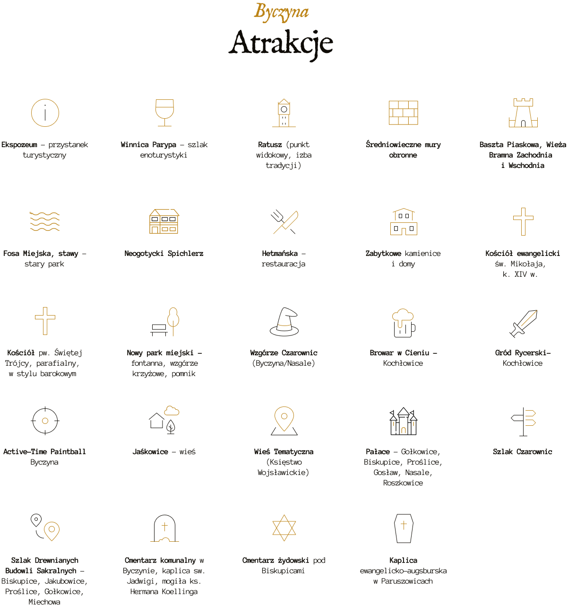
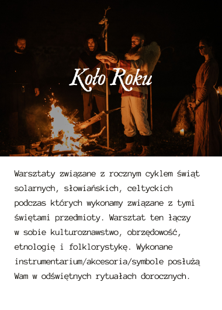
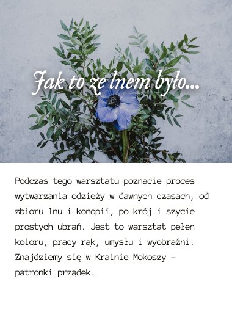

Informacja
Turystyczna

Na ul. Wąskiej (od strony Rynku) prowadzimy Welesowy Kram. Jest to sklep z pamiątkami, rzemiosłem i produktami lokalnymi, a jednocześnie Punkt Informacji Turystycznej. Znajdziecie tu wszelkie potrzebne informacje na temat Byczyny i okolic, przewodników, foldery oraz inną, niezbędną obsługę turystyczną.



Warsztaty


Oferta dla grup

Questy i gry